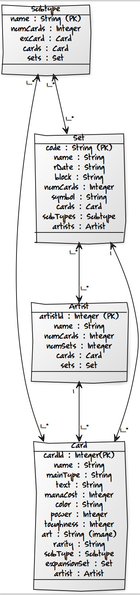

Our website, MagicDB, is a database for the wildly popular card game Magic the Gathering! Fans of this card game can search for and get details about the various cards in the game.
Nestor Castro
Nestor is a 3rd-year Computer Science major at the University of Texas at Austin. He is the current VP of Communications of Sigma Lambda Beta, a Latino-based multicultural Fraternity. On his free time, he enjoys exploring the outdoors, playing pool, and jamming out to the Red Hot Chili Peppers.
Responsibilities: front-end, hosting
Number of commits:
Number of issues: 2
Number of unit tests: 0
Nicholas Cobb
Nicholas is a 3rd-year Computer Science major at the University of Texas at Austin. Nicholas has interned at Google two times and is about to again this summer. In his free time, he enjoys writing music and participating in political clubs on campus.
Responsibilities: front-end, coding
Number of commits:
Number of issues: 1
Number of unit tests: 0
Joel Davis
Joel is a 4th-year Computer Science major at the University of Texas at Austin. Enjoys game development and software engineering. In his free time he likes video games, guitar, and skateboarding.
Responsibilities: back-end, API
Number of commits:
Number of issues: 0
Number of unit tests: 6
Nilo Lisboa
Nilo is a 4th-year Computer Science Major at UT Austin. He has interned twice at IBM both part-time and full-time. He really enjoys story-driven video games as well as archery and kendo.
Responsibilities: back-end, Phase I Leader
Number of commits:
Number of issues: 0
Number of unit tests: 0
Matthew Martinez
Matthew is a 3rd-year Computer Science major at the University of Texas at Austin. He is the vice-president of Lambda Omega Alpha, an independent Catholic Service Fraternity on campus. In his very little free time he enjoys watching Netflix and spending quality time with friends.
Responsibilities: front-end, design
Number of commits:
Number of issues: 13
Number of unit tests: 0
Jose Ramirez
Jose is a 4th-year Computer Science major at the University of Texas at Austin. He enjoys game development and participates in ACM activities. In his free time, he plays video games and watches gaming streams on Twitch.
This is a database report for the wildly popular card game Magic the Gathering! Using our application a user can search for and get details about the various cards in MTG.
Developers: SWEet Gathering
Nestor Castro: Junior, Front-end, Hosting
He is a 3rd year Computer Science major at the University of Texas at Austin. He is the current VP of Communications of Sigma Lambda Beta, a Latino-based multicultural Fraternity. On his free time, he enjoys exploring the outdoors, playing pool, and jamming out to the Red Hot Chili Peppers.He was responsible for setting up the GCP server and updating the image of the website.
Nicholas Cobb: Junior, Front-end, Website
He is a 3rd year Computer Science major at the university of Texas at Austin. He has interned at Google two times and am about to again this summer. In his free time, he enjoys writing music and participating in political clubs on campus.He was responsible for implementing the HTML, CSS and JavaScript/TypeScript for the website.
Joel Davis: Senior, Front-end, API
He is a 4th-year Computer Science major at the University of Texas at Austin. Enjoys game development and software engineering. In his free time he likes video games, guitar, and skateboarding.He was responsible for documenting the API with Apiary, writing unit tests, and setting up the team’s continuous integration framework with Travis CI.
Nilo Lisboa: Senior, Back-End, Phase 1 Leader
Nilo is a 4th-year Computer Science Major at UT Austin. He has interned twice at IBM both part-time and full-time. He really enjoys story-driven video games as well as archery and kendo.
He was responsible for designing the models and attributes in Phase 1 as well as creating the UML diagram.
Matthew Martinez: Junior, Front-end, Design
Matthew is a third year Computer Science major at the University of Texas at Austin. He is the vice-president of Lambda Omega Alpha, an independent Catholic Service Fraternity on campus. In his very little free time he enjoys watching Netflix and spending quality time with friends. He was responsible for linking the custom domain and planning some of the general design of the website.
Jose Ramirez: Senior, Back-End, Testing
Jose is a 4th-year Computer Science major at the University of Texas at Austin. He enjoys game development and participates in ACM activities. In his free time, he plays video games and watches gaming streams on twitch. He was responsible for making unit tests and setting up continuous intergragtion framework with Travis CI.
Introduction
What is the Problem?
Magic the Gathering is a physical, and digital (came out at a later date), trading card game that pioneered this entire genre back in 1993 when it came out. It continues to thrive with millions of active players worldwide. With the age of the product though, comes the constant need for refreshment with the creation of new cards, game-modes, expansions containing hundreds of cards, and more. Due to that, nowadays, the game has over 16000 cards available and more than 70 card expansions. As a player, it is nigh impossible to pick out the cards you want for your deck, without being able to narrow down the search. The service we are creating would do just that.
Use Cases
There are many use cases for such a database among players. Perhaps a player is looking for a specific card to put in their deck, but is unsure of what that card does, in which case a user can look for that card in our database to read up on its characteristics. Alternatively, Magic has many formats of play, and some of them can only make use of specific card sets. Standard format, the most popular, only allows players to build decks with the 2 most recent years of expansion releases. A player attempting to make standard a standard deck would look for cards among the sets that are permitted in that format by filtering our cards based on the sets they belong to. Some players specifically want cards that match an artstyle they like or just collect cards they think are pretty. In this case, a player would be able to look on our artist table and view which cards they worked on. Lastly, players could be trying to make Tribal decks, which look for cards of specific subtypes with the purpose of synergizing their effects. A user would then be able to visit our subtype table, and check out cards filtered by subtype, additionally, if they don’t even know which subtype they want to pick for a deck, there will be example cards of those subtypes available for users to view.

Models
Cards - This model contains information specifically regarding cards as implied in a card game, they are of immense importance and thus, have a large number of attributes. Cards have unique IDs identifying each of them
report
Set - This model contains information pertaining to sets, which in turn, are like containers upon which cards are released in MtG. Sets are a very helpful way to distinguish cards from each other. The Set model also has relations to all other models.
Artist - The artist model serves as another method for a user to distinguish cards, as many cards could have been worked on by a specific artist. This model is related to the Set and the Card model.
Subtype - The Subtype model serves as a final way to distinguish cards. Cards that have similar subtypes often synergize their effects, so it is important to be able to select subtypes of interest and view all related cards. This model is related to the Card and Set models.
The Magic: The Gathering API we are using is structured in a way that allows for easy searching through cards and sets and works with a variety of parameters. The database is grouped into four pillars: Cards, Sets, Card Types, and Formats.
Cards is self explanatory and denotes the cards available in the game. Each card has a variety of parameters:
name: The card name. For split, double-faced and flip cards, just the name of one side of the card. Basically each ‘sub-card’ has its own record.
layout: The card layout. Possible values: normal, split, flip, double-faced, token, plane, scheme, phenomenon, leveler, vanguard
cmc: Converted mana cost. Always a number.
colors: The card colors. Usually this is derived from the casting cost, but some cards are special (like the back of dual sided cards and Ghostfire).
colorIdentity: The card colors by color code. [“Red”, “Blue”] becomes [“R”, “U”]
type: The card type. This is the type you would see on the card if printed today. Note: The dash is a UTF8 'long dash’ as per the MTG rules
supertypes: The supertypes of the card. These appear to the far left of the card type. Example values: Basic, Legendary, Snow, World, Ongoing
types: The types of the card. These appear to the left of the dash in a card type. Example values: Instant, Sorcery, Artifact, Creature, Enchantment, Land, Planeswalker
subtypes: The subtypes of the card. These appear to the right of the dash in a card type. Usually each word is its own subtype. Example values: Trap, Arcane, Equipment, Aura, Human, Rat, Squirrel, etc.
rarity: The rarity of the card. Examples: Common, Uncommon, Rare, Mythic Rare, Special, Basic Land
set: The set the card belongs to (set code).
setName: The set the card belongs to.
text: The oracle text of the card. May contain mana symbols and other symbols.
flavor: The flavor text of the card.
artist: The artist of the card. This may not match what is on the card as MTGJSON corrects many card misprints.
number: The card number. This is printed at the bottom-center of the card in small text. This is a string, not an integer, because some cards have letters in their numbers.
power: The power of the card. This is only present for creatures. This is a string, not an integer, because some cards have powers like: “1+*”
toughness: The toughness of the card. This is only present for creatures. This is a string, not an integer, because some cards have toughness like: “1+*”
loyalty: The loyalty of the card. This is only present for planeswalkers.
foreignName: The name of a card in a foreign language it was printed in
language: The language the card is printed in. Use this parameter when searching by foreignName
gameFormat: The game format, such as Commander, Standard, Legacy, etc. (when used, legality defaults to Legal unless supplied)
legality: The legality of the card for a given format, such as Legal, Banned or Restricted.
page: The page of data to request
pageSize: The amount of data to return in a single request. The default is 100, the max is 1000. If more than 1000 is requested, 100 will be returned.
orderBy: The field to order by in the response results
random: Fetch any number of cards (controlled by pageSize) randomly
contains: Filter cards based on whether or not they have a specific field available (like imageUrl)
The database has two GET methods for searching through cards: Get All Cards and Get a Specific Card. Get All Cards returns a list of all of the cards in the database up to a specified pageSize, with a maximum of 100 cards per request. Get a Specific Card will retrieve a specific card from the database if given one or more of the paramaters above.
Sets denotes a group of cards that were released at the same time by the developer and were designed to be played in the same environment. Being able to search for cards by set and see what cards are contained in a specific set is an important part of the knowledge of the game.
Set has two parameters:
Name: The name of the set
Block: the block the set is in
The database has commands to GET all sets and GET a specific set by set name. It can also Generate a Booster Pack for a specified set similar to booster packs sold at retail.
Card Types denotes the different types or classes for each card. The types include things like artifact, creature, enchantment, etc. and have different effects and abilities when used in the card game.
For types the database has three GET methods which are self explanatory. Get All Types, Get all Supertypes, and Get all Subtypes.
Formats denotes special formats for playing the game and the database has one GET method for this pillar called Get All Formats.
Tools
Front End
Bootstrap- Bootstrap is a popular framework for the front-end aspect of web projects. It facilitates design by providing various pre-designed, responsive HTML elements such as buttons, menus, navigation bars, search bars, input boxes and more. The CSS classes included with Bootstrap work with the HTML elements to facilitate the creation of a sleek, customizable interface for a website.
jQuery- jQuery is a small and powerful JavaScript library that simplifies tasks like HTML DOM traversal, HTML DOM editing, and event handling much simpler. jQuery is used with Bootstrap to help create a smooth front-end to a web project.
Angular 2- Angular 2 is a development platform for building responsive web applications using TypeScript or JavaScript. It facilitates the use of TypeScript or JavaScript by organizing the code into manageable components.
Back End
Flask- Flask is a framework for Python based on Werkzeug and Jinja 2.
SQLAlcehmy-
Google Cloud Platform- The Google Cloud Platform is a means of hosting our website. It provides the ability to create and edit a website in the cloud. The details of the hosting are described in the “Hosting” section below.
Embedding-Media Services
To embed media into the website, we will use Bootstrap and Angular 2, as described in the “Front End” subsection of “Tools”. The Bootstrap library includes features to allow for simple media embedding.
Communication/Other
GitHub- GitHub is used for version control for our project. Every member of our group pushed to the same public GitHub repository, to bring the entire project together, even when we were working separately or remotely. If there is ever an issue with an update to the code, rolling back to an old version is simple and quick. When one member makes a change, other members can easily see what code was removed or added, so we could pick up where someone else left off. Another helpful tool GitHub provides is the Issue Tracker. It’s an easy way to see what tasks need to be done, as well as keep track of bugs that need to be fixed.
Slack- We used Slack as our main method of communication. It has a web and mobile application that we used to coordinate meeting times, and share pictures, information, and anything else we needed to communicate quickly with the group. Slack is integrated with the GitHub repo so in between personal communication we could all see when commits or issues were created.
Hosting
First Steps
The first step was to decide which server to use. In our case, we decided to use the Google Cloud Platform (GCP) server simply because it was easier to understand and slightly more inexpensive than the Amazon Web Services (AWS) server. Initially we planned on using the AWS server because it seemed to be the most popular choice, but the tutorials provided were not as easy to follow as those provided by GCP. Also, having received a one-hundred dollar coupon from Google as incentive to use their servers, we felt that using GCP was the way to go.
To begin hosting our web app on the GCP server, we first signed up using a gmail account. We initially made the mistake of linking our GCP to one of our university emails and could not create any projects, so we had to create a new account and link it to one of our personal gmails. Once we had created an account, we opened the “console,” which is where you monitor and view information regarding your web app project, and looked over some of the tutorials provided.
Google SDK
After having created an account and looked over some tutorials, we went on to create a new project. Having created a new project inside the console, we moved on to the hosting process and downloaded the Google Cloud SDK. The SDK, which is a set of tools allowing you to access various services in the Google Cloud Platform, would later allow us to deploy, browse, and do other things to our app. We then created a new directory (inside the same directory in which the SDK directory was located) and named it the same name as our Project-ID, as required. We followed a sample directory structure provided by Google’s “Hosting a static website on Google App engine” guide, and included all the files needed to deploy our web app.
Project-ID Directory
One file in particular, the “app.yaml” file, required us to do quite some research. This file works as a sort of “makefile” and maps URLs to your static files so the web app can be displayed on your browser, therefore making sure it was properly implemented was extremely important. Also, along with the .yaml file we had our .html, .css, and image files in there respective folders so we made sure that every time something was added, deleted or moved, the .yaml file was updated.
Deploying the App
Now that we had created our project inside the console, installed the SDK, and placed our web app inside the <Project-ID> directory, we were ready to deploy and successfully host our app using the GCP server. To do just that, we had to go into the “bin” folder of our SDK directory and run the “gcloud app deploy <path to app.yaml file> app.yaml” command. Having deployed successfully, we then ran the “gcloud app browse” command and a new window displaying our app popped up. We had finally completed our hosting process and our app was now online.
Custom Domain
In addition, after completing our hosting process, we wanted to link our web app to a custom domain. To accomplish this we used Namecheap’s free educational bundle and acquired the magicdb.me domain. Next, we went over to our console’s settings and added and verified our new domain. Once verified, we added all of the custom domain records to namecheap and waited for a few hours for the linkage to complete. Having completed this process, we were finally able to browse for our website under the magicdb.me URL.